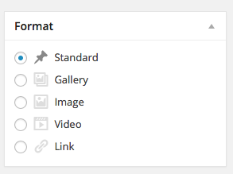

Post formats are used in WordPress to indicate different types of content. Today we’ll look at adding post formats to our themes. A good example of how you might use post formats is this screenshot of the theme Flounder:
Post formats will usually require similar code to what is already being written in the template files, but allow for certain customizations. WordPress has standard post formats that can be used, including: aside, gallery, image, link, quote, status, video, audio, chat. Not all of them have to be used but this group cannot be added to. We’ll look at creating custom posts for more customization next week.
To start creating post formats, add this line to functions.php, which will allow us to select post formats within the Dashboard post editor:
add_theme_support( 'post-formats', array( 'gallery', 'image', 'video', 'link' ) );In this case I’m only using four of the possible post formats.
Once added, you will see a new widget in your post editor:
You can choose the type of post here. Once you know what type of post you want to use, you can use the added WordPress code to change the style or functionality of the post. Let’s add the post-format as a CSS class to each of the posts in the front page using the function <?php echo get_post_format(); ?>.
<div class="<?php echo get_post_format(); ?> feature-post small-12 medium-4 large-4 columns">
<a href="<?php the_permalink(); ?>">
<?php the_post_thumbnail(); ?>
<div class="feature-title">
<?php the_title(); ?>
</div>
</a>
</div>Then we can use the class to add new styles in CSS (in the SASS file):
.image {
.feature-title {
background:rgba(adjust-hue($color, 60), 0.9);
}
}
.gallery {
.feature-title {
background:rgba(adjust-hue($color, 120), 0.9);
}
}
.link {
.feature-title {
background:rgba(adjust-hue($color, 180), 0.9);
}
}
.video {
.feature-title {
background:rgba(adjust-hue($color, 240), 0.9);
}
}